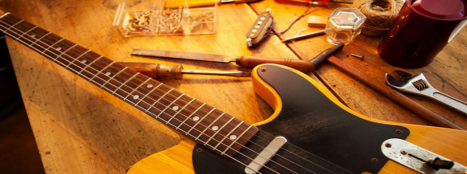

Paavon kitarat
Laadukkaat kitarat ja soitinhuollot edullisesti.
Laadukkaat kitarat ja soitinhuollot edullisesti.
Olemme vuonna 2022 toiminnan aloittanut kitaramyymälä. Keskitymme pääasiassa sähkökitaroihin, mutta joitain akustisiakin löytyy. Kaikki sähkökitaramme ovat tällä hetkellä ESP merkkisiä. Liikkeemme sijaitsee Helsingin keskustassa, osoitteessa Paavonkatu 123. Kitaroiden lisäksi meillä on myymälässä kaikki tarvittavat kitaratarvikkeet, ja myös kitaranhuolto on mahdollista. Lisää huolloista täällä .
Voit ottaa yhteyttä meihin sähköpostitse, paavon.kitarat@sposti.com, tai soittamalla, 0441234567. Olemme auki ma-pe 10-18 ja la-su 10-15. Kaikilla kitaroillamme on 1 vuoden takuu. Jos haluat jättää jotain palautetta, voit täyttää alla olevan lomakkeen.
Meiltä saa myös soitinhuoltopalveluita. Tuo kitara myymälään, niin käydään läpi mitä soittimelle pitää tehdä. Veloitus menee huoltoon menneen ajan mukaan. Tuntihinta on 65€. Hintaan lisätään vielä uusien kielten hinnat. Huollon yhteydessä voimme vaihtaa kitaraan myös uusia osia, kuten mikrofonit tai virittimet. Silloin huollon hintaan lisätään vielä uusien osien hinnat.
Normaali huolto maksaa useimmiten noin 75€ (uudet kielet laskettu mukaan hintaan), kestää noin tunnin. Perushuollossa teemme kitaraan perus säädöt kaulaan ja tallaan, tarkistamme elektroniikat ja öljyämme otelaudan.
Jos et pääse paikan päälle ostamaan tai itse pysty kuljettamaan kitaraa, voit myös tilata toimituksen. Vaihtoehtoja on useita, suurin osa tuo soittimen lähimmälle noutopisteelle, mutta myös suoraan kotiovelle tilaaminen onnistuu. Alla vaihtoehdot.
Projektissa piti käyttää uusia html- ja css-tekniikoita, alla ne mitä itse opettelin.